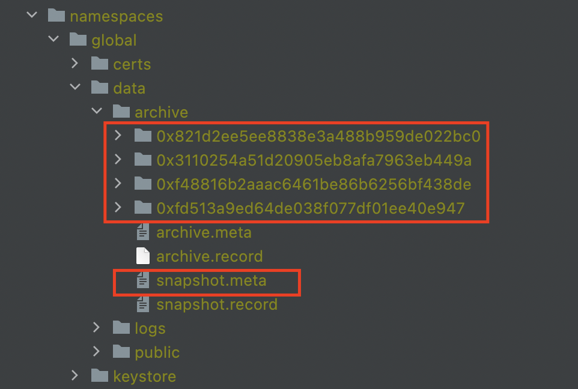
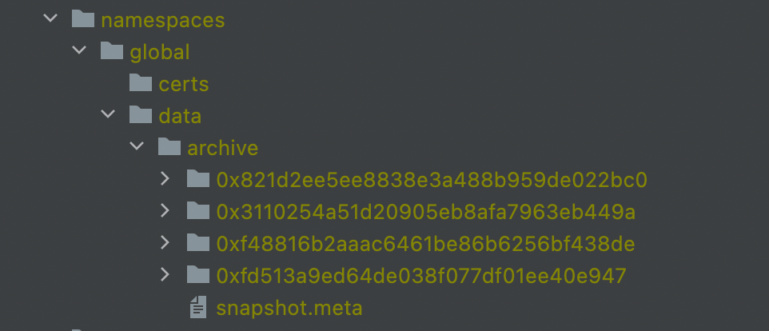
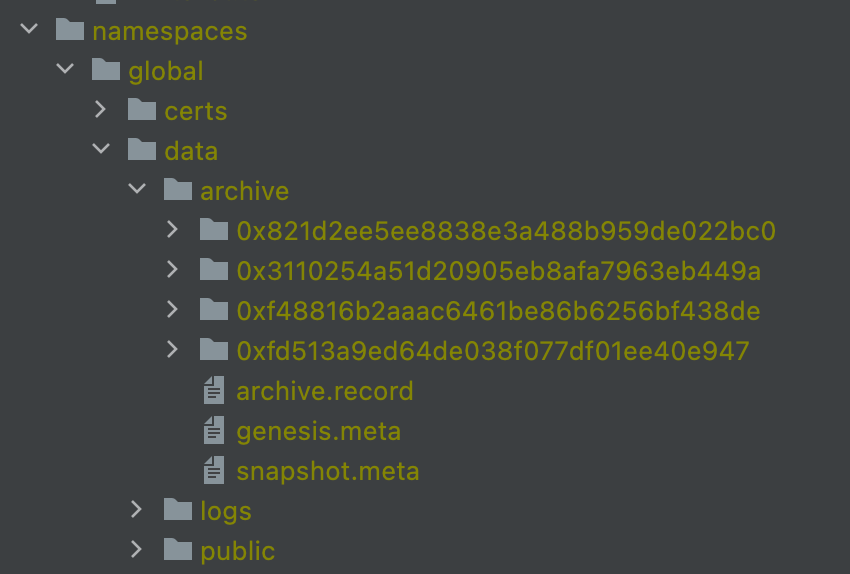
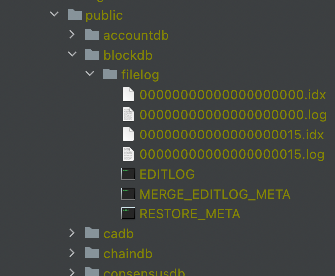

ArchiveReader使用手册¶
2. 使用方式¶
2.1 归档数据restore¶
在部署方面， 相比于hyperchain，ArchvieReader二进制只需要一份配置文件即可启动。而配置文件可以完全复用hyperchain的配置。
在使用方面， ArchiveReader的核心功能为线下数据restore和通过api接口查询restore到线上的数据，因此使用ArchiveReader需要首先准备线下数据，线下数据的来源即为hyperchain上归档以后的线下目录下的内容，具体的，一份合法的线下数据内容如下图所示：

上图为一个hyperchain-2.7.0归档过3次的节点的data/archive目录下的数据，其中的红色框圈起来的数据，是需要手动拷贝到ArchvieReader的namespaces/global/data/archive目录下的数据。即一个合法的ArchiveReader节点在启动前应该准备好如下的目录结构：

至此，ArchiveReader的线下数据准备完成，下面可以进行restore操作：首先 启动ArchiveReader，然后可以看到其namespaces/global/data目录下的结构为：

archive目录下新增了archive.record文件和genesis.meta文件。public目录下的结构和普通的vp节点的public目录下结构相同。
接下来， 用户就可以通过命令进行restore操作了 ，ArchiveReader上提供了restore的API，curl命令为:
curl localhost:8081 --data '[{"jsonrpc": "2.0", "id": 0, "method": "archive_restore", "params": ["0xf48816b2aaac6461be86b6256bf438de", true], "namespace": "global"}]'
接口说明：
接口名称 |
archive_restore |
||
|---|---|---|---|
参数说明 |
名称 |
类型 |
含义 |
filterID |
string |
预期恢 复的区块范 围对应的sn apshot标识 |
|
shouldSync |
bool |
是否同 步的等待返 回（true为 同步等待） |
|
返回值 |
如果第二个参数true， 则接口返回true即表示restore完成； |
||
如果为false，则需要通过archiv e_queryArchive接口获得结果；查询请 求为：如果成功，可以看到如下结果： |
当归档成功后，ArchiveReader的线上数据库中会有这一段数据，如图所示：

此时用户可以使用ArchiveReader暴露的读取数据的接口进行数据访问。
restore的使用限制条件！！！
整体上，ArchiveReader要求按照区块号 从小到大 的顺序 连续 进行restore，比如线下有多份归档数据（分别对应：0-15，15-20，20-40），那么用户需要按照先0-15，再15-20，最后20-40的顺序进行restore。过程中 不能出现 区块号的断档。
如果当前ArchiveReader没有任何数据，ArchiveReader并不要求一定要从0号开始restore，即上述的场景下，用户可以按照先15-20，再20-40的顺序进行restore，这样也是合法的。但是后续 不再允许 restore[0-15]了。
2.2 状态证明¶
参考《状态证明使用手册》
2.3 ArchiveReader支持接口¶
接口类型 |
接口名称 |
接口描述 |
|---|---|---|
交易接口 |
tx_getTransactionByHash |
根据交 易哈希值查询交易详情 |
tx_ getTransactionByBlockHashAndIndex |
根据区块哈 希及索引查询交易详情 |
|
tx_ge tTransactionByBlockNumberAndIndex |
根据区块号及 索引信息查询交易详情 |
|
tx_getTransactionsCount |
根据区块号及 索引信息查询交易详情 |
|
tx_getTxAvgTimeByBlockNumber |
查询指定区 块中交易平均处理时间 |
|
tx_getTransactionReceipt |
查询指定交易回执信息 |
|
tx_getBlockTransactionCountByHash |
根据区块 哈希查询区块交易数量 |
|
tx _getBlockTransactionCountByNumber |
根据区 块号查询区块交易数量 |
|
tx_getTransactionsVersion |
查询 平台当前的交易版本号 |
|
tx_getTransactionsWithLimit |
查询指定区块区间 的交易（可用于分页） |
|
tx_getTransactionsByTimeWithLimit |
查询指定时间区间内 的交易（可用于分页） |
|
tx_getTransactionsByExtraID |
查询 extraId为指定值的交易 |
|
tx_getTransactionsByFilter |
查 询符合过滤条件的交易 |
|
t x_getInvalidTransactionsWithLimit |
查询指定区块区 间的非法交易(可分页) |
|
tx _getInvalidTransactionByBlockHash |
查询非法交易列表（by block hash） |
|
tx_g etInvalidTransactionByBlockNumber |
查询非法交易列表（by block number） |
|
tx_getInvalidTransactionsCount |
查 询链上所有非法交易量 |
|
区块接口 |
block_latestBlock |
获取最新区块 |
block_getBlockByHash |
根据区块 的哈希值返回区块信息 |
|
block_getBlockByNumber |
根 据区块号返回区块信息 |
|
bloc k_getAvgGenerateTimeByBlockNumber |
根据区块区间计算 出区块的平均生成时间 |
|
block_getGenesisBlock |
查询创世区块号 |
|
block_getChainHeight |
查询最新区块号 |
|
block_getBlocksWithLimit |
查询指定区块区间的所 有区块（可用于分页） |